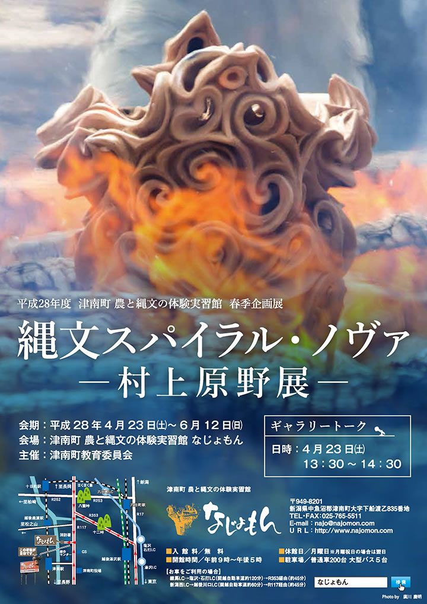
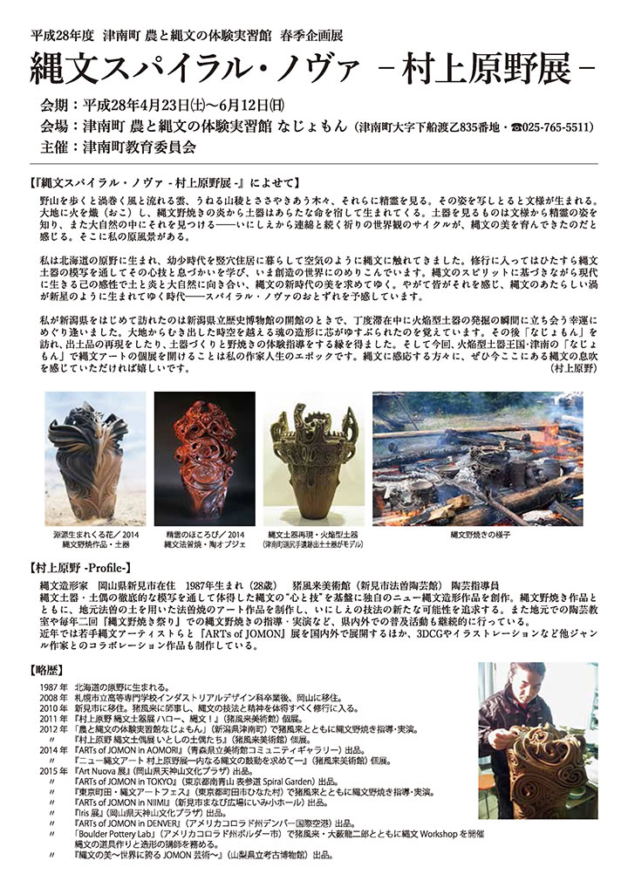
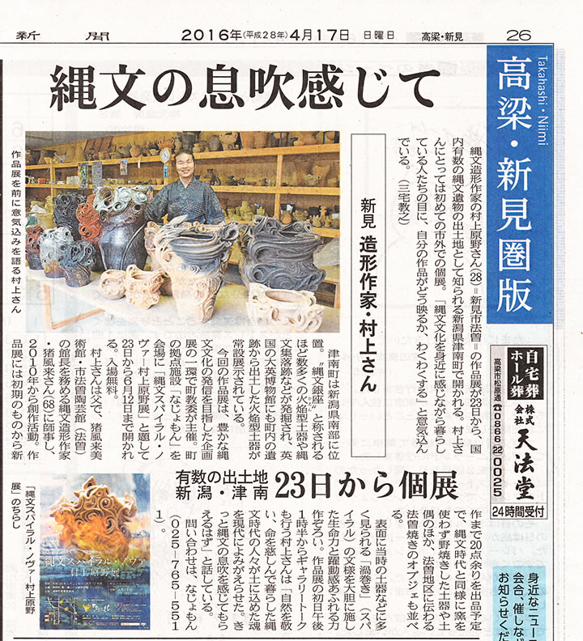

|  |
|  |
| 【縄文スパイラル・ノヴァ 村上原野展チラシ】 →PDF版を開く |
■開館時間 午前９：００～午後５：００
■休館日 月曜日（月曜休日の場合は翌日）
■入館料 無料
■お問い合わせ先 農と縄文の体験実習館「なじょもん」
〒949-8201 新潟県中魚沼郡津南町大字下船渡乙835
TEL/FAX 025-765-5511
=∴=∵=∴=∵=∴=∵=∴=∵=∴=∵=∴=∵=∴=∵=∴=∵=∴=∵=∴=∵=∴=∵=∴=∵=∴=∵=∴=
野山を歩くと渦巻く風と流れる雲、うねる山稜とささやきあう木々、それらに精霊を見る。
その姿を写しとると文様が生まれる。
大地に火を熾し、縄文野焼きの炎から土器はあらたな命を宿して生まれてくる。
土器を見るものは文様から精霊の姿を知り、また大自然の中にそれを見つける――いにしえから連綿と続く
祈りの世界観のサイクルが、縄文の美を育んできたのだと感じる。
そこに私の原風景がある。
私は北海道の原野に生まれ、幼少時代を竪穴住居に暮らして空気のように縄文に触れてきました。
修行に入ってはひたすら縄文土器の模写を通してその心技と息づかいを学び、いま創造の世界にのめりこんで
います。
縄文のスピリットに基づきながら現代に生きる己の感性で土と炎と大自然に向き合い、縄文の新時代の美を
求めてゆく。
やがて皆がそれを感じ、縄文のあたらしい渦が新星のように生まれてゆく時代――スパイラル・ノヴァの
おとずれを予感しています。
私が新潟をはじめて訪れたのは県立歴史博物館の開館のときで、丁度滞在中に火焔型土器の発掘の瞬間に立ち
会う幸運にめぐり逢いました。
大地からむき出した時空を越える魂の造形に芯がゆすぶられたのを覚えています。
その後なじょもんを訪れ、出土品の再現をしたり、土器づくりと野焼きの体験指導をする縁を得ました。
そして今回、火焔土器王国・津南のなじょもんで縄文アートの個展を開けることは私の作家人生のエポックです。
縄文に感応する方々に、ぜひ今ここにある縄文の息吹を感じていたければ嬉しいです。
=∴=∵=∴=∵=∴=∵=∴=∵=∴=∵=∴=∵=∴=∵=∴=∵=∴=∵=∴=∵=∴=∵=∴=∵=∴=∵=∴=
【村上原野 -Profile-】
縄文造形家
岡山県新見市在住
1987年生まれ（28歳）
猪風来美術館（新見市法曽陶芸館） 陶芸指導員
縄文土器・土偶の徹底的な模写を通して体得した縄文の“心と技”を基盤に独自のニュー縄文造形作品を創作。
縄文野焼き作品とともに、地元法曽の土を用いた法曽焼のアート作品を制作し、いにしえの技法の新たな
可能性を追求する
また地元での陶芸教室や毎年二回『縄文野焼き祭り』での縄文野焼きの指導・実演など、県内外での普及
活動も継続的に行っている。
近年では若手縄文アーティストらと『ARTs of JOMON』展を国内外で展開するほか、3DCGやイラストレー
ションなど他ジャンル作家とのコラボレーション作品も制作している。
【略歴】
1987 年 北海道の原野に生まれる。
2008 年 札幌市立高等専門学校インダストリアルデザイン科卒業後、岡山に移住。
2010 年 新見市に移住。猪風来に師事し、縄文の技法と精神を体得すべく修行に入る。
2011 年 『村上原野 縄文土器展 ハロ－、縄文！』（猪風来美術館） 個展。
2012 年 「農と縄文の体験実習館なじょもん」（新潟県津南町） で猪風来とともに縄文野焼き指導･実演。
〃 『村上原野 縄文土偶展 いとしの土偶たち』（猪風来美術館） 個展。
2014 年 『ARTs of JOMON in AOMORI』（青森県立美術館コミュニティギャラリー） 出品。
〃 『ニュー縄文アート 村上原野展―内なる縄文の鼓動を求めて―』（猪風来美術館） 個展。
2015 年 『Art Nuova展』 （岡山県天神山文化プラザ） 出品。
〃 『ARTs of JOMON in TOKYO』（東京都南青山 表参道Spiral Garden） 出品。
〃 『東京町田・縄文アートフェス』（東京都町田市ひなた村） で猪風来とともに縄文野焼き指導･実演。
〃 『ARTs of JOMON in NIIMI』（新見市まなび広場にいみ小ホール） 出品。
〃 『Iris展』 （岡山県天神山文化プラザ） 出品。
〃 『ARTs of JOMON in DENVER』（アメリカコロラド州デンバー国際空港） 出品。
〃 「Boulder Pottery Lab」（アメリカコロラド州ボルダー市）で猪風来・大薮龍二郎とともに縄文
Workshopを開催・縄文の道具作りと造形の講師を務める。
〃 『縄文の美～世界に誇るJOMON芸術～』（山梨県立考古博物館）出品。
|  | |
| 【山陽新聞 2016.04.17】 | |